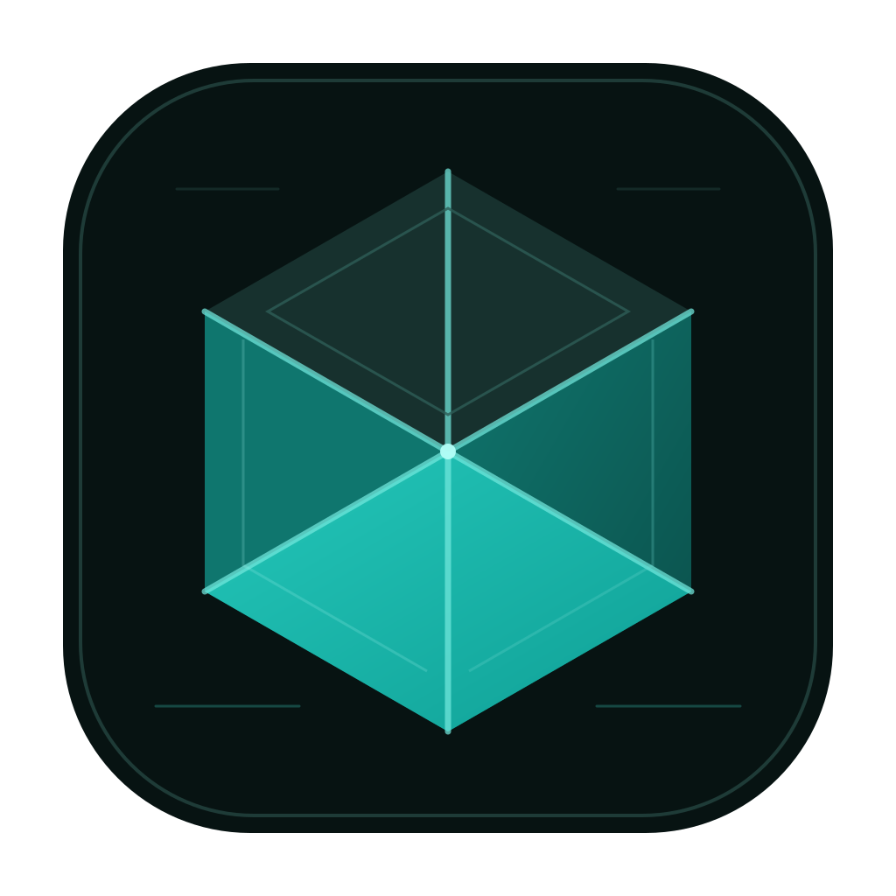

Verifying administrator access / جارٍ التحقق من صلاحية الإدارة…

Unified Diagnostics / التشخيص الشامل
One privacy-safe report for runtime, Safari, auth, navigation, storage and vault state.
Checking… / جارٍ الفحص…
The top button copies one combined report containing deployment health, browser/PWA state, storage and vault-size metadata, plus the complete runtime event log. It does not open or print decrypted business content. زر النسخ بالأعلى ينسخ تقريرًا واحدًا يجمع حالة النشر والمتصفح والتخزين والخزنة وسجل التشغيل كاملًا، بدون فتح أو عرض محتوى أعمالك المشفّر.
Unified runtime timeline / سجل التشغيل الشامل0 events stored on this device
Use LOUREX normally. The recorder follows lifecycle, screen transitions, intentional navigation/reload markers, JavaScript and Promise errors, failed resources, Firebase auth state, cloud events, workspace dirty/editor state, network, Service Worker, viewport and periodic storage estimates. Repeated identical errors are grouped with a repeat counter so one failure cannot flood the report. يسجل النظام دورة حياة الصفحة والتنقلات والأخطاء وحالة تسجيل الدخول والسحابة والمحرر والشبكة والتخزين، ويجمع الأخطاء المتكررة بدل إغراق التقرير. لا يتم تسجيل أسماء العملاء أو المستندات أو المبالغ أو كلمات المرور أو رموز تسجيل الدخول أو محتوى المرفقات.
No runtime events recorded yet.
AI provider diagnostics / تشخيص مزوّدي الذكاء الاصطناعي
Manual, one provider at a time. Uses a fixed synthetic arithmetic question only. It never sends invoices, customer data, document text or financial ledgers. No fallback provider or paid Kilo model is used. Each provider can be tested up to 12 times within 10 minutes independently. The second button tests 5 separate synthetic bookkeeping calculations in ONE request; the score is for QA only and not a guarantee of production financial accuracy.
اختبار يدوي لمزوّد واحد في كل مرة، بسؤال حسابي وهمي ثابت. لا يُرسل فواتير أو بيانات عملاء، ولا ينتقل إلى مزوّد آخر. نموذج Kilo المختار مجاني فقط.
OpenRouter uses the free-only router. “Verify key” reads fixed Gemini model metadata or the Mistral/Ollama model catalog without AI generation; it does not confirm inference quota or free-plan billing eligibility. For Mistral and Ollama, arithmetic/accuracy tests stay blocked until the administrator verifies the account allowance and explicitly enables them on the server; API keys alone never authorize billable inference. OpenRouter مجاني فقط. يبقى اختبار Mistral وOllama مقفلاً حتى التحقق من الخطة المجانية للحساب والموافقة على تفعيله من إعدادات الخادم.
Groq
Connection: Not tested / الاتصال: لم يُختبرFive-case QA: Not tested / دقة المسائل: لم تُختبر
Cloudflare
Connection: Not tested / الاتصال: لم يُختبرFive-case QA: Not tested / دقة المسائل: لم تُختبر
Gemini
Connection: Not tested / الاتصال: لم يُختبرFive-case QA: Not tested / دقة المسائل: لم تُختبرCredential: Not checked / المفتاح: لم يُفحص
Kilo Gateway
Connection: Not tested / الاتصال: لم يُختبرFive-case QA: Not tested / دقة المسائل: لم تُختبر
OpenRouter (free only)
Connection: Not tested / الاتصال: لم يُختبرFive-case QA: Not tested / دقة المسائل: لم تُختبر
Mistral (free-tier verification required)
Connection: Not tested / الاتصال: لم يُختبرFive-case QA: Not tested / دقة المسائل: لم تُختبرCredential: Not checked / المفتاح: لم يُفحص
Ollama Cloud
Connection: Not tested / الاتصال: لم يُختبرFive-case QA: Not tested / دقة المسائل: لم تُختبرCredential: Not checked / المفتاح: لم يُفحصFree GPT-OSS 20B: Not tested / النموذج البديل: لم يُختبر. One manual synthetic request consumes free usage / طلب وهمي يدوي من المخصص المجاني.